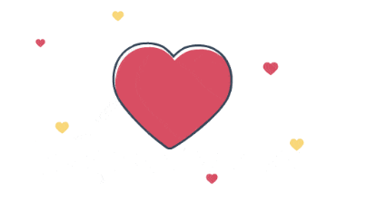

人生に迷ってるあなたへ、、偉い人が言ってたことをまとめてみた。
1つ目 嘘をつかないこと
自分に嘘をつかない。他人にも嘘をつかない。
自分に嘘をついてまでやりたくないことはやらない。
人生からやりたくないことを除外出来るように努力すること

2つ目 takeからgiverへ
takeはもらうで、giveは与える。
自分の利益も大事だけど、手っ取り早く稼ぐには、人のためになることをすること
注意点があって、時間と体は他人に与えないこと。与えるものは簡単なものでよくて、例えば、知識とか思いやりとか。
自分の持ってるものや作り出せるものをあげること

3つ目 めいっぱい楽しいことをやろう
先を見据えるなら、これからの時代は、パソコンかIT、動画業界に強いと無双できるのかな
たぶん、今の問題の答えは頭の隅にすでにあるから、無意識に行動してたら結果的にやりたいことに繋がるのかな。

人生の分岐点にいるのかもしれないね
俺も誇りが持てなかったから、部活、勉強、バイトとか頑張ったんだ。
頑張ったけど、結局のところ誇りはいまだに持てなくて、でも今までの成功や失敗のおかげで、それが土台になって今を胸張って生きてるんだと思う。
人生で、ここって山を決めて、ひたすら頑張るのは人生の大きな財産になると思うよ

最後に酔った時の対処法
漫画とかスマホに夢中になって、それを閉じたときに感覚がおかしくなった時
心を落ち着かせることに意識を集中させる。死ぬわけではないから大丈夫。
そして、落ち着いてきたらゆっくり呼吸をすること。そうしたら症状がなくなるよ。

おすすめ
| アニメ | マンガ |
|---|---|
| ヴァイオレット | Perfect Crime |
| サイコパス | 働きマン |
| ノラガミ | 花より男子 |